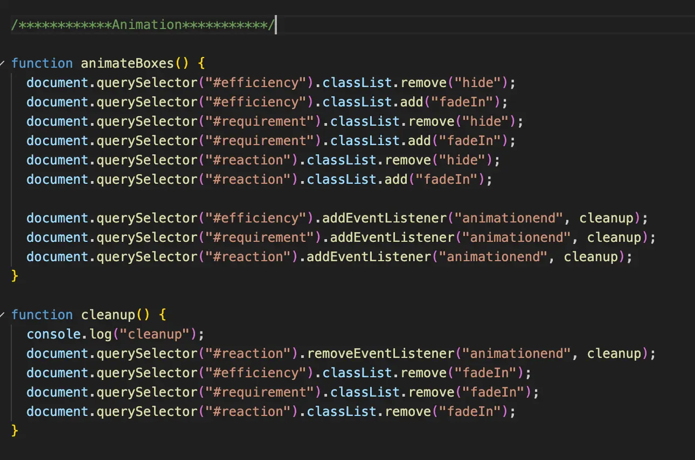
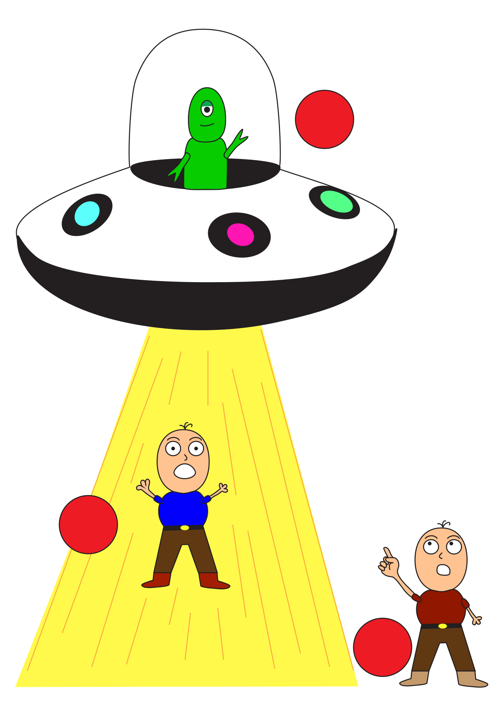

Tema 4 - Grundlæggende brugergrænsefladeudvikling
Grundlæggende User Interface - formål
Formålet med dette tema var at opnå en større forståelse for udvikling af brugergrænseflader (User Interface). Vi fik udleveret et allerede færdigudviklet site, som vores opgave var at videreudvikle og tilpasse ved hjælp af værktøjer som CSS, JavaScript og Adobe Illustrator.
I temaet blev vi introduceret til nye idéudviklings- og skitseringsteknikker, hvor vi blandt andet udarbejdede en papirprototype, som efterfølgende blev digitaliseret i Adobe Illustrator.
I Adobe Illustrator arbejdede vi med vektorgrafik i SVG-format og fik til opgave at udvikle en figur, der skulle fungere som et UI-element på det givne site.
Derudover dykkede vi længere ned i CSS og udviklede nye færdigheder. Blandt andet pop-up-vinduer, dark mode, custom properties og transitions.
Som en del af temaet dokumenterede vi vores proces gennem moodboards, figurskitser, layoutskitser og style tiles.


Læring og proces
I dette tema fik jeg mulighed for at fordybe mig yderligere i, hvad det vil sige at style og personliggøre en hjemmeside ved hjælp af CSS – både i forhold til farver, typografi og billedbrug.
Jeg fik til opgave at udvikle et Emergency website med udgangspunkt i et valgfrit emne, der skulle omhandle en form for nødsituation. Jeg valgte at skabe en hjemmeside med fokus på, hvad man skal gøre, hvis man bliver kidnappet af rumvæsner, og arbejdede bevidst med mørke og dystre farver for at understøtte en intergalaktisk og stemningsfuld visuel identitet.
Som en del af temaet blev vi introduceret til Adobe Illustrator, hvor jeg udviklede en interaktiv figur med hotspots, som brugeren kunne interagere med. Her blev jeg klogere på brugen af Illustrators værktøjer samt på, hvordan en figur kan eksporteres og anvendes som SVG i et website.
Derudover arbejdede jeg med udvikling af en indberetningsformular, hvilket gav mig en bedre forståelse for strukturering af indhold ved hjælp af sections og text-areas.
Jeg blev også introduceret til simple animationer, hvor jeg ved hjælp af JavaScript og document.querySelector implementerede en fade-in-animation på elementer på siden for at skabe mere dynamik i brugeroplevelsen.